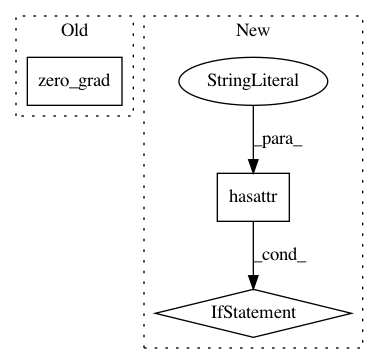

aab3902d4a7d55f5a86058854adc36b8a12c873f,catalyst/dl/callbacks/base.py,OptimizerCallback,on_batch_end,#OptimizerCallback#Any#,202
Before Change
self._accumulation_counter = 0
else:
model = state.model
model.zero_grad()
optimizer = state.get_key(
key="optimizer", inner_key=self.optimizer_key
)
loss = state.get_key(key="loss", inner_key=self.optimizer_key)
After Change
// change in future.
// But alternative solution is to have AmpOptimizerCallback.
// or expose another c"tor argument.
if hasattr(optimizer, "_amp_stash"):
from apex import amp
with amp.scale_loss(loss, optimizer) as scaled_loss:
scaled_loss.backward()
else:
loss.backward()
if (self._accumulation_counter + 1) % self.accumulation_steps == 0:
self.grad_step(
optimizer=optimizer,
optimizer_wd=self._optimizer_wd,
In pattern: SUPERPATTERN
Frequency: 4
Non-data size: 3
Instances
Project Name: Scitator/catalyst
Commit Name: aab3902d4a7d55f5a86058854adc36b8a12c873f
Time: 2019-05-20
Author: ekhvedchenya@gmail.com
File Name: catalyst/dl/callbacks/base.py
Class Name: OptimizerCallback
Method Name: on_batch_end
Project Name: kengz/SLM-Lab
Commit Name: 0ac2b33e8c63304a50db7d2b484368299706b58b
Time: 2018-11-14
Author: kengzwl@gmail.com
File Name: slm_lab/agent/net/mlp.py
Class Name: MLPNet
Method Name: training_step
Project Name: kengz/SLM-Lab
Commit Name: 0ac2b33e8c63304a50db7d2b484368299706b58b
Time: 2018-11-14
Author: kengzwl@gmail.com
File Name: slm_lab/agent/net/recurrent.py
Class Name: RecurrentNet
Method Name: training_step